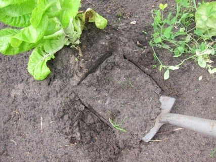
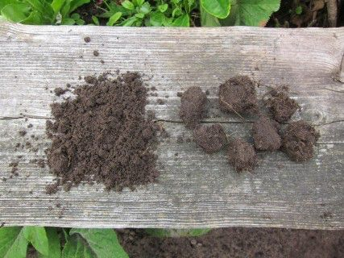

Moestuin
Moestuin
### DE BODEM IN DE MOESTUIN
Graaf een kuiltje en kijk of de wortels de grond wel goed kunnen doorwortelen. Geef ieder jaar 200 tot 300 liter mest of compost per 100 vierkante meter voor onderhoud van de bodem. Daarnaast soms nog wat aanvullende meststoffen.
Inhoud
- Inleiding
Moestuinen komen op veel verschillende bodems voor. Iedere bodem heeft zijn eigen wijze van beheer en de beschreven werkwijze bij akkerbouw en tuinbouw op de verschillende bodems kan richting geven aan het beheer van moestuinen op de verschillende bodems. Moestuinen hebben ook iets gemeenschappelijks. Er worden namelijk vaak veel verschillende gewassen verbouwd, maar bijna geen van deze gewassen levert voldoende organische stof voor onderhoud van de bodem.
- Hoe te bemesten
In de praktijk wordt op de meest verschillende wijzen bemest. Soms worden extreme hoeveelheden mest of compost jaarlijks ondergewerkt, soms wordt er alleen met wat organische of minerale mestkorrels gewerkt. Extreme mesthoeveelheden zoals 10 tot 20 kruiwagens per 100 m2 geven ogenschijnlijk wel een mooie grond, maar de voeding van de plant is zeer onevenwichtig en jaar in jaar uit van deze planten eten is niet wenselijk. De nitraatgehalten worden dan veel te hoog en ook de smaak heeft er onder te lijden. Alleen wat mestkorrels, vaak voor een groot deel bestaande uit kippenmest is ook niet wenselijk. De bodemkwaliteit gaat achteruit. Alle gronden, ook humusrijke en veengronden, hebben regelmatig wat mest of compost nodig. Hoeveel dan? Als richtlijn kan aangehouden worden zo’n 300 liter per 100 m2 per jar. Dat mag ook wel 600 liter om het andere jaar zijn, maar niet een keer in de bijvoorbeeld 5 jaar een grote hoeveelheid geven. Het bodemleven heeft jaarlijks voedsel nodig en niet een keer per 5 jaar.
Wanneer vele jaren 300 liter mest of compost per 100 m2 gegeven wordt (bij goede bodems 200 liter), zijn aanvullende bemestingen steeds minder nodig. De eerste jaren is wat stikstofrijke mest of kaliumrijke mest aanvullend vaak wel nodig. Een bodemanalyse kan hierbij helpen om de juiste hoeveelheid te kiezen.
Verder moet beoordeeld worden of de bodem voldoende diep los is en de wortels goed de grond in kunnen komen. Een kuil wijst dit uit. Mocht de bodem verdicht zijn dan kan dubbeldiep spitten waarbij de bovenste 25 cm ook boven blijft nodig zijn. Wanneer de laag 25 tot 40 cm arm is aan organische stof kan hier wat compost doorgewerkt worden. Niet lopen op de bedden waar de gewassen geteeld worden is van groot belang. Hoe de bovenste 40 cm beoordeeld kan worden met een kleine profielkuil wordt in het volgende beschreven.
3. Zelf compost maken
3.1 De werkwijzeCompost kan gemaakt worden met een hoop op de grond, in een afgeschermde ruimte en in een compostvat. Steeds is het belangrijk om zowel structuurrijk materiaal en makkelijk verteerbaar materiaal te mengen. Gebruik je alleen structuurrijk materiaal zoals takjes dan kan het heel lang duren om een goede compost te krijgen. Gebruik je alleen structuurarm materiaal zoals gemaaid gras dan kan er geen lucht toetreden en krijg je geen goede compost.
Structuurrijk materiaal is bijvoorbeeld: kort geknipte takjes, stro, stengels van planten.Makkelijk verteerbaar materiaal is bijvoorbeeld: vers blad, mest, keukenafval.
De verhouding tussen beide soorten materiaal leer je vanzelf goed kiezen door een aantal jaren gecomposteerd te hebben. Omzetten is soms nodig vaak ook niet. Zorg dat er wat regenwormen in komen. Wordt er wat langer op een plaats gecomposteerd dan komen die vanzelf. Wanneer ze er niet zijn dan enkele toevoegen.
4. Beoordeel zelf uw bodem!
We gaan in een kleine kuil de bodem beoordelen en letten daarbij vooral op de beworteling en de bodemstructuur.
We doen dit bij een plant die al wat langer in de grond staat. Bijvoorbeeld een doorgeschoten slakrop, maar op zich is iedere plant geschikt.
Eerst graven we naast de plant een kuiltje.


Nu steken we met de spade links,
rechts,
en achter
en steken de kluit uit op 20 cm diepte

Leg de kluit ergens op zodat die goed bekeken kan worden;
met een mes de grond wat loskrabben.

Bij deze grond zijn veel wortels op 20 cm diepte.

In de laag 0-20 cm waren kruimels en afgerond blokkige kluitjes, waar wortels doorheen groeiden.

We gaan nu dieper naar 40 cm en steken eerst links en achter weer af,
Ook op 40 cm vinden we nog wortels, maar deze zijn wat dikker en kronkeliger en hebben wat meer moeite om de grond in te komen.
De grond bestond uit hoekige, scherpblokkige kluiten, waar de wortels alleen langs, maar niet in konden groeien.
5. De teelt van gewassen in de moestuin: hoe in te spelen op droogte:
Aardappel
Begin pas met water geven als de knolgroei goed op gang is gekomen. Te vroeg beginnen geeft veel blad en daardoor gevoeligheid voor droogte.
Andijvie
Een tekort aan water kan leiden tot te vroeg schieten
Vroege andijvie water geven bij een droge periode van 2 à 3 weken.
In de zomer de grond voor planten goed vochtig maken.
Herfstteelt water geven bij uitplanten en bij droogte eind augustus en september.
Asperge (wit)
Geef water in augustus en september en bij lange droge perioden in de zomer.
Bleekselderij
Van half juli tot begin september voldoende water geven. Zorg ervoor dat de schommelingen in het vochtgehalte van de grond niet te groot zijn.
Bloemkool
Bloemkool stelt hoge eisen aan een regelmatige watervoorziening. Water geven direct na het planten en vanaf het
6 e of 7e blad.
Broccoli
Broccoli is erg gevoelig voor vochttekort. Kritieke perioden zijn de eerste week na het uitplanten en tijdens de schermaanleg.
Chinese kool
Chinese kool heeft gedurende de hele groei voldoende water nodig.
Courgette
Tot aan de bloei is niet veel water nodig. Tijdens bloei en vruchtzetting is er wel behoefte aan water. Giet niet op de bloemkelken.
Doperwt
Erwten moeten dieper kunnen wortelen voor voldoende vochtaanvoer. Voor de bloei geen water geven.
Knolvenkel
Knolvenkel stelt hoge eisen aan de watervoorziening. In droge perioden een keer per week water geven.
Rode biet
Tussen zaai en opkomst mag de grond niet uitdrogen. Na opkomst is de waterbehoefte niet groot.
Peen
Peen stelt hoge eisen aan de waterhuishouding. Verdichte lagen remmen de wateropname.
Prei
Prei moet van planten tot oogst voldoende water hebben.
Sla
Vroege teelt
Vooral bij droge perioden van 2 à 3 weken water geven. In het kropstadium mag er geen vochttekort zijn.
Zomerteelt
Bij temperaturen boven 22 graden veel aandacht aan voldoende vocht besteden.l Voor het planten zorgen voor een vochtige grond. Op extreem warme dagen is het het beste om ’s morgens vroeg water te geven.
Spinazie
Spinazie stelt hoge eisen aan de watervoorziening. Het gewas is door zijn snelle groei en volledige grondbedekking gevoelig voor verdroging, vooral op gronden die niet diep bewortelbaar zijn. Wortels moeten tot 50 cm diepte kunnen groeien.
Zeer vroege en vroege teelten
De zeer vroege en vroege teelten kunnen last van te natte grond hebben.
Voorjaarsspinazie
Spinazie die ongeveer half maart gezaaid en in de tweede helft van mei geoogst wordt heeft in het algemeen weinig of geen water nodig.
Zomerspinazie
Spinazie die van begin mei tot eind juli op het veld staat, heeft kans op vochttekort. Bij te weinig vocht gaat het gewas schieten. In droge, en warme perioden ongeveer twee keer per week water geven.
Herfstteelt
De herfstteelt heeft in het algemeen geen water nodig.
Sluitkool
Watertekort in juni en juli kan tot ernstige schade aan het gewas leiden. Bij knolvoetproblemen de grond aan de droge kant houden. Tijdens de koolvorming is voldoende vocht van veel belang.
Spruitkool
De opbrengst van spruitkool daalt sterk in droge zomers op zandgronden. Na het planten water geven. Een gelijkmatige groei zonder sterk vochttekort is belangrijk.